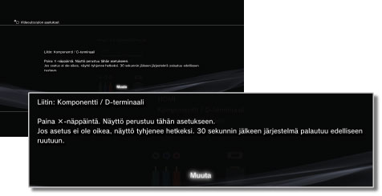
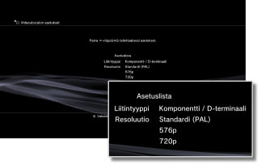

Videoulostulon asetukset
Voit muuttaa järjestelmän videolähdön asetuksia. Valitse asetukset, jotka sopivat parhaiten käytössä olevalle televisiolle.
1. |
Tarkista television tukema resoluutio.
Resoluutio (videotila) vaihtelee television tyypin mukaan. Saat lisätietoja television käyttöohjeista.
|
2. |
Valitse  (Asetukset) > (Asetukset) >  (Näyttöasetukset). (Näyttöasetukset).
|
3. |
Valitse [Videoulostulon asetukset].
|
4. |
Valitse television liitäntätyyppi.
Resoluutio (videotila) vaihtelee käytettävän liitännän tyypin mukaan.

| Kaapelityyppi |
Television tuloliitäntä |
Tuetut videotilat *1 |
HDMI-kaapeli (lisävaruste)
 |
HDMI
 |
NTSC: 1080p / 1080i / 720p / 480p
PAL: 1080p / 1080i / 720p / 576p |
Komponentti-AV-kaapeli (lisävaruste)

D-liitäntäkaapeli (lisävaruste)
 |
Komponentti

D-terminaali *2
 |
NTSC: 1080p / 1080i / 720p / 480p / 480i
PAL: 1080p / 1080i / 720p / 576p / 576i |
AV-kaapeli (mukana)

S VIDEO kaapeli (lisävaruste)
 |
Komposiitti

S-video*3
 |
NTSC: 480i
PAL: 576i |
AV MULTI -kaapeli (lisävaruste) ［VMC-AVM250］ (Sony Corporation -tuote)

AV-kaapeli (mukana)
Euro-AV-liitin (mukana) *4
 |
AV MULTI*5

SCART*6
 |
NTSC: 480p / 480i
PAL: 576p / 576i |
| *1 |
Videotilavaihtoehdot vaihtelevat PS3™-järjestelmän ostomaan mukaan. Pohjois-Amerikassa, Aasiassa ja muilla NTSC-alueilla 480i-videotila näytetään [Standardi (NTSC)] -muodossa. Euroopassa ja muilla PAL-alueilla 576i-videotila näytetään [Standardi (PAL)] -muodossa. Saat lisätietoja tuotteen käyttöohjeista.
|
| *2 |
D-liitäntätyyppiä käytetään pääasiassa Japanissa. Liitännät D1:stä D5:een tukevat seuraavia resoluutioita:
D5: 1080p/720p/1080i/480p/480i
D4: 1080i/720p/480p/480i
D3: 1080i/480p/480i
D2: 480p/480i
D1: 480i
|
| *3 |
S VIDEO -liitäntää käytetään pääasiassa Japanissa.
|
| *4 |
Euro-AV-liitin toimitetaan vain Euroopassa myytyjen PS3™-järjestelmien mukana.
|
| *5 |
AV MULTI -liitäntää käytetään pääasiassa Japanissa. Jos [AV MULTI / SCART] on valittu, esiin tulee näyttö, jossa voit valita lähtösignaalin tyypin.
|
| *6 |
SCART-liitäntää käytetään pääasiassa Euroopassa. Jos [AV MULTI / SCART] on valittu, esiin tulee näyttö, jossa voit valita lähtösignaalin tyypin.
|
|
5. |
Aseta 3D-televisionäytön koko.
Aseta järjestelmä vastaamaan käyttämäsi television näytön kokoa.
Jos käyttämäsi televisio ei ole 3D-televisio tai et valinnut asetusta [HDMI] kohdassa 4, tätä näyttöä ei tule näkyviin.
|
6. |
Muuta videolähdön asetuksia.
Muuta videolähdön resoluutiota. Vaiheessa 4 valittu liitäntätyyppi vaikuttaa siihen, näytetäänkö tämä näyttö.

|
7. |
Aseta resoluutio.
Valitse kaikki resoluutiot, joita käytössä oleva TV tukee. Video toistetaan automaattisesti korkeimmalla resoluutiolla valituista, jos toistettava sisältö mahdollistaa tämän.*
* Videoresoluutio valitaan tärkeysjärjestyksessä seuraavasti: 1080p > 1080i > 720p > 480p/576p > Standardi (NTSC:480i/PAL:576i).
Jos vaiheessa 4 valitaan [Komposiitti / S-video], resoluutioiden valintanäyttö ei tule näkyviin.
Jos [HDMI] on valittuna, voit ottaa käyttöön resoluution automaattisen valinnan (HDMI-laitteen pitää olla päällä). Tässä tapauksessa resoluution valintanäyttöä ei näytetä.

|
8. |
Valitse TV-tyyppi.
Valitse käytettävän television tyyppi. Valitse tyyppi, jos ainoastaan SD-resoluutio (NTSC: 480p/480i, PAL: 576p/576i) on käytössä ulostulossa, kuten silloin, jos vaiheessa 4 on valittu [Komposiitti / S-video] tai [AV MULTI / SCART].

|
9. |
Tarkista asetukset.
Vahvista, että näkyvän kuvan resoluutio sopii televisiolle. Voit palata edelliseen näyttöön ja muuttaa siinä näkyviä asetuksia painamalla  -painiketta. -painiketta.

|
10. |
Tallenna asetukset.
Videolähtöasetukset tallennetaan PS3™-järjestelmään. Voit nyt määrittää äänen ulostulon asetukset. Lisätietoja äänen ulostulosta on tämän oppaan kohdassa (Asetukset) >  (Ääniasetukset) > [Audio Output Settings]. (Ääniasetukset) > [Audio Output Settings].
|
Vihjeitä
- Jos videolähtöasetukset eivät sovi käytössä olevalle televisiolle, ruutu voi tyhjentyä, kun resoluutiota vaihdetaan. Näytön alkuperäisen resoluution pitäisi kuitenkin palautua automaattisesti hetken kuluttua. Jos ruutu on edelleen tyhjä 30 sekunnin kuluttua, sammuta järjestelmä. Käynnistä sitten järjestelmä uudelleen painamalla järjestelmän etuosassa olevaa power button ainakin viiden sekunnin ajan. Tavallinen resoluutio palautetaan automaattisesti videoulostulon asetuksiin.
- Jos järjestelmään on kytketty HDMI-kaapelilla laite, joka ei tue HDCP (High-bandwidth Digital Content Protection) -standardia, järjestelmä ei tuota kuvaa ja/tai ääntä.
- Tekijänoikeuksin suojattuja Blu-ray Disc -levyjä voi toistaa 1080p-tilassa vain HDMI-kaapelilla liitetyllä laitteella, joka tukee HDCP-standardia.
- Kun PS3™-järjestelmä (CECH-3000- / CECH-4000-sarja) kytketään televisioon D-liitäntäkaapelilla, komponentti-AV-kaapelilla tai AV MULTI -kaapelilla (Sony Corporation -tuote), analogista HD-lähtöä rajoitetaan tekijänoikeuksia suojaavan Blu-ray™ (AACS (Advanced Access Content System)) -tekniikan ehtojen täyttämiseksi. BD-video-ohjelmistojen (BD-ROM) ja BD-levyjen, jotka tallennetaan tekijänoikeuksilla suojatusta videolähteestä (kuten lähetyksestä), ulostulona on 480i.
- Kytke järjestelmä (CECH-4200-sarja tai uudempi) käyttämällä HDMI-kaapelia toistaaksesi BD-video-ohjelmistoja (BD-ROM) ja BD-levyjä, joilla on tekijänoikeussuojattua videota.